Does a Kitsune-Style GPU Dataflow Pipeline Need a 3D-Stacked Queue Fabric?
A four-simulator pilot study of L2-cache / on-chip-network contention in GPU producer–consumer pipelines, and a fair comparison of 3D-stacked queue hardware against strong planar (2D) alternatives. 30 experiments (2 batteries) ≈800 simulation runs 4 platforms v2: rebuilt on measured GPU behavior Verdict: Conditional support, strengthened
Version 2. After the first study (Parts 1–5 below), every simulator was rebuilt around real-silicon measurements of NVIDIA's L2 and interconnect (MICRO'24 / validated-model literature) and the whole experiment battery was rerun. Section 12 describes the rebuild; several v1 findings did not survive it and are explicitly superseded there — that reversal is itself one of the study's main results.
Every number on this page is simulated or calculated on a scaled model with assumed parameters (NVIDIA does not publish its L2/NoC internals, and no GPU was available for calibration). Trends are cross-validated on three independent simulators; absolute magnitudes are illustrative, not predictions.
Contents
1 · Executive summary
Kitsune (Davies et al., arXiv:2502.18403) makes a GPU run dependent kernel stages at the same time, passing intermediate results through software queues that live in the GPU's shared L2 cache instead of writing them out to DRAM. That is faster — but it turns the L2 cache and the on-chip network into a message fabric on top of their day job as a memory system. This pilot asked: does that dual use ever become the bottleneck, and if so, is dedicated 3D-stacked queue hardware the right fix — or would cheaper 2D ("planar") tricks do?
The most instructive result is methodological: rebuilding the simulators to match real-GPU measurements reversed several v1 conclusions (§12–§14) — a live demonstration of the published warning that under-provisioned simulated NoCs systematically overstate network effects. All superseded findings are kept and labeled, not deleted.
2 · Glossary — every term used on this page
Definitions are written for a reader who knows basic computer architecture but not GPU internals or this project.
The machine
- GPU
- Graphics Processing Unit — a processor built from many small cores that run thousands of threads at once; today mostly used for AI and scientific computing.
- SM (Streaming Multiprocessor)
- One of the GPU's compute clusters. A large GPU has 100+ SMs; each runs many thread groups concurrently. In our scaled model there are 8 SM endpoints.
- CTA (Cooperative Thread Array)
- NVIDIA's name for a thread block: a group of threads scheduled onto one SM as a unit. Kitsune builds its pipelines out of CTAs — some CTAs are "producer stages", others "consumer stages".
- L2 cache
- The GPU's large last-level on-chip memory cache (tens of MB on real GPUs; 8 MiB in our scaled model), shared by all SMs. It is divided into slices (address- partitioned sections) and each slice into banks (independently accessible sub-arrays, each serving ~1 access at a time).
- Cache line
- The unit of cache storage and transfer — 128 bytes here. "Pinning" a line means keeping it in the cache permanently, exempt from eviction.
- MSHR
- Miss-Status Holding Register — bookkeeping entry that tracks an in-flight cache miss. A cache with all MSHRs busy cannot accept new misses (a source of stalls).
- Atomic operation
- A read-modify-write memory operation (e.g. fetch-and-add) executed indivisibly. Kitsune uses atomics on queue head/tail counters. Each L2 slice has an atomic unit that serializes them — a potential choke point.
- NoC (Network-on-Chip)
- The on-chip packet network connecting SMs to L2 slices. Ours is a 4×4 mesh (grid of routers). A flit (flow-control digit, 32 B here) is the unit a link carries per cycle; a packet is one or more flits.
- Virtual channel (VC)
- Separate buffer lanes sharing one physical link, letting one traffic class pass a blocked one — the classic logical (as opposed to physical) isolation tool.
- Head-of-line (HOL) blocking
- When the packet at the front of a queue is stuck, everything behind it waits even if its own path is free. VCs exist to relieve this.
- HBM
- High-Bandwidth Memory — the GPU's off-chip DRAM stack. "Off-chip traffic" = reads/writes that miss in L2 and go to HBM; it is slow (~400 cycles) and energy-expensive relative to on-chip access.
- 3D-IC / stacked tier
- Putting a second silicon die directly on top of the GPU die, connected by dense vertical wires — TSVs (through-silicon vias) or hybrid bonding (direct copper-to-copper bonds, much denser). The proposal studied here puts queue SRAM and queue-management logic on that upper die.
- Vertical link / portal
- The wire bundle connecting a point on the GPU die to the stacked die. We call the GPU-side attachment point a portal. Designs differ in how many portals exist and where (one per SM, per SM-cluster, per L2 slice, or one global).
Terms added by the v2 realism upgrade (§12)
- Sector
- A 32-byte quarter of a 128-byte cache line. Real NVIDIA L1/L2 track validity and dirtiness per sector; the memory coalescer issues 32-B sector requests, so filling a line takes four sector transactions. Simulators that ignore this get request counts 4× wrong.
- TPC / GPC
- Texture Processing Cluster = 2 SMs sharing one network port through a multiplexer; Graphics Processing Cluster = a group of TPCs. The GPU interconnect is organized around these levels, not as a flat grid.
- Hierarchical crossbar
- The real topology of the SM↔L2 interconnect (per MICRO'24 measurements): traffic concentrates up through SM→TPC→GPC ports into a central switch and fans out to memory partitions — not a multi-hop 2D mesh.
- Input speedup
- Excess injection bandwidth provided at a sharing point. TPC level has speedup 2 (both SMs get full read bandwidth); GPC level is deliberately under-provisioned (~50–85% of full) — a measured property our v2 fabric reproduces.
- Die partition / near & far
- Large GPUs (A100/H100/B200) split the die into halves (quarters on B200); an SM accessing an L2 slice on the other half pays a measured ~149-cycle penalty ("far hit" ~357 vs "near hit" ~208 cycles on A100).
- Partition camping
- Pathological address patterns that concentrate traffic on few memory channels/slices; the reason GPUs hash addresses across slices.
- Network wall
- A simulator mis-configuration where the modeled NoC↔memory interface is narrower than memory bandwidth, capping DRAM utilisation at ~20% where real GPUs sustain >85% — and silently inflating the apparent value of any NoC optimization. Our v2 model asserts against it at construction.
- Lazy fetch-on-read
- NVIDIA's measured L2 write-miss policy: write the bytes into the sector with a write mask and do not fetch from DRAM; only a later read of a partially written sector triggers the fetch-and-merge. Eliminates the huge phantom DRAM-read counts naive write-allocate models produce.
- P-chase (pointer chase)
- The microbenchmark technique behind all the latency numbers used here: a chain of dependent loads timed one by one, so each access's true latency is exposed.
- Posted enqueue
- Producer-side software pipelining: the producer claims a slot, fires the payload writes and release, and continues immediately (bounded window of 2 in flight). Mandatory in v2 — with realistic ~300-cycle round trips, an unpipelined enqueue would dominate item time in a way real double-buffered producers avoid.
The execution model
- Bulk-synchronous execution
- The normal GPU style: run kernel A to completion, write its whole output to memory, synchronize, then run kernel B which reads it back. Stages never overlap.
- Dataflow / spatial pipeline
- Kitsune's style: stage A and stage B run concurrently on different SMs; A streams results to B in small tiles through queues. Stages overlap in time, intermediates stay on-chip.
- Queue (ring buffer)
- A fixed-size first-in-first-out buffer. The producer enqueues items; the consumer dequeues them. Depth = how many items it can hold. Payload = the data bytes of one item. Metadata = the small control state around it (head/tail counters, ready flags, credits).
- Backpressure
- When the queue is full, the producer must stop — the stall propagates backwards. The opposite, starvation, is a consumer stalling on an empty queue.
- Polling / spinning
- Repeatedly reading a flag ("is there an item yet?") in a loop. Kitsune's software queues poll; each poll is real memory traffic. Hardware alternatives deliver an event (a wake-up message) instead.
- Credit
- A token representing one free queue slot. A producer holding zero credits knows the queue is full without having to poll the consumer's side.
- Queue traffic vs demand traffic
- The paper's central distinction. Queue traffic = payload + metadata + polling generated by pipeline communication. Demand traffic = the ordinary loads/stores the computation itself needs (inputs, weights, outputs). The worry is that both share the same L2 + NoC.
The metrics
- Throughput
- Completed pipeline items per clock cycle (higher is better). Our runs measure it after a warm-up window (first 20% of items excluded).
- PC — communication penalty
P_C = (T_real − T_ideal) / T_ideal, where T is time per item for Kitsune with its real queue (B2) vs an ideal free queue (B3). It answers: "how much performance does queue communication itself cost?" PC=0.20 means the real queue makes the pipeline 20% slower than it could ideally be.- Gap recovery
- For any remedy X:
(T_B2 − T_X) / (T_B2 − T_B3)— the fraction of the avoidable penalty that X eliminates. 1.0 = as good as the ideal queue; 0 = no help; negative = made things worse. - S3D
- Speedup of the 3D design over shared-L2 Kitsune:
T_B2 / T_B8. - Iso-capacity / iso-bandwidth comparison
- A fairness rule: when comparing planar vs 3D queue hardware, give both the same SRAM capacity / total bandwidth, so 3D cannot win merely by having more resources.
- Utilisation (ρ)
- Fraction of a resource's capacity in use (busy time ÷ total time). Queueing delay explodes as ρ → 1 ("saturation").
- p50 / p95 / p99
- Percentiles: p95 latency = 95% of requests were at least this fast. Tail latency (p99) matters because one late ready-flag can stall a whole consumer stage.
The methods
- Discrete-event simulation (DES)
- Simulation that jumps from event to event (packet arrives, bank finishes an access) rather than ticking every cycle for every wire — fast and exact for queueing systems.
- Closed-loop vs open-loop traffic
- Closed-loop: simulated producers/consumers react to the system — a blocked producer stops generating traffic (like real programs). Open-loop: traffic is injected at a fixed rate regardless of congestion (standard in pure network studies, but misses feedback). The plan mandates closed-loop for all primary results.
- M/D/1 queue model
- Textbook queueing formula (random arrivals, fixed service time, one server) used in the first-order analytical model to predict waiting time from utilisation.
- Little's law
occupancy = rate × time-in-system— a conservation law any correct simulator must satisfy; we use it as a validation check.- Ablation
- Removing/idealizing one mechanism at a time (e.g. "make the NoC infinitely fast") to attribute how much of the penalty each mechanism causes.
- Baseline / workload sweep
- A baseline is one machine configuration (B0–B8 below); a sweep runs the same experiment across a range of one parameter (payload size, CTA count, …).
3 · The research question
Kitsune's queues live inside the shared L2 and travel over the shared NoC, so queue traffic and demand traffic compete for the same physical resources: L2 capacity, cache banks and ports, atomic units, MSHRs, and every router and link of the mesh. The proposed alternative physically separates them: queue payload and metadata move over dedicated vertical links to SRAM on a stacked die, leaving the planar L2/NoC to demand traffic alone.
The pilot was explicitly forbidden from assuming the hypothesis. It had to answer, in order:
| # | Question | Answered by |
|---|---|---|
| RQ1 | Can Kitsune-like closed-loop behavior be reproduced at all? | custom simulator + SST (backpressure, starvation, spill all emerge) |
| RQ2–3 | Does queue traffic hurt demand traffic, and does Kitsune still win? | Results 1 (§7) |
| RQ4–5 | How big is the real-vs-ideal gap and which resource causes it? | Results 1–2 (§7–8) |
| RQ6–8 | Do planar fixes suffice? Does 3D beat them fairly? At what cost? | Results 3–4 (§9–10) |
| RQ9 | Where exactly is 3D useful / useless / harmful? | Benefit region (§11) + final table (§14) |
4 · The baseline ladder B0–B8
Every claim is comparative, so the study defines nine machine configurations. The gaps between rungs of this ladder are themselves the measurements: B2−B3 = total avoidable communication penalty; B2−B6 = L2-sharing cost; B6−B7 = shared-NoC cost; B7−B8 = what only 3D adds.
| ID | Configuration | What it isolates |
|---|---|---|
| B0 | Bulk-synchronous: kernel A → memory → barrier → kernel B | the normal GPU baseline Kitsune must beat |
| B1 | Both kernels concurrent but no queue coupling | generic concurrency contention without queues |
| B2 | Kitsune: L2-resident queues, atomics, spin-polling, pinned lines | the real system under study |
| B3 | Kitsune with an ideal queue: zero traffic, zero latency, zero footprint (finite depth kept) | upper bound; defines PC |
| B4 | L2 way-partitioning (queue lines restricted to 4 of 16 ways) | logical cache isolation |
| B5 | Separate virtual channels for queue vs demand classes | logical network isolation |
| B6 | Dedicated planar queue SRAM at each slice (hardware engines, events, no polling) — traffic still on the shared NoC | removing L2 capacity/bank sharing |
| B7 | B6 + a second dedicated planar network for queue traffic | the strongest planar design — 3D's real competitor |
| B8 | 3D: stacked queue SRAM + engines reached over vertical links (designs 3D-A…F vary portal placement and what is stacked) | physical vertical isolation |
Fairness rules: all designs move payload in 128-B cache lines; B6–B8 all get the same hardware-engine + event protocol (no polling handicap for planar); B7's dedicated network has aggregate bandwidth ≥ B8's vertical links, so any B8 win is not a bandwidth artifact; stacked SRAM capacity = planar queue SRAM capacity (iso-capacity). Ablations A1–A11 (used in §8) idealize one resource at a time on top of B2.
5 · The four simulators
No single simulator is trustworthy alone, so the plan requires several with different strengths, cross-checked (§12). All four model the same scaled system: 8 SM endpoints and 8 L2 slices on a 4×4 mesh, 8 MiB L2, HBM at 700 B/cycle and 400-cycle latency — roughly 1/8 of a large GPU, with every parameter recorded as an assumption.
5.1 Analytical model (first-order mathematics)
A ~300-line Python model: each pipeline stage's item time is
T = compute + demand_requests/MLP × memory_latency + enqueue_time;
each shared resource (L2 banks, atomic unit, NoC hotspot link, HBM, vertical links) gets
an M/D/1 waiting time from its utilisation; the achieved rate is solved as a fixed point
(rates raise utilisations, which raise latencies, which lower rates). Purpose: predict
where contention should appear before writing any simulator, and provide
closed-form sanity anchors (zero-load latency, saturation throughput) the simulators
must reproduce. It predicted: hotspot NoC link binds first, banks second; severe region
at queue/demand byte ratio ≳1–2 or footprint ≳0.5×L2 — both
later confirmed.
5.2 Custom closed-loop discrete-event simulator (the workhorse)
Python, ~2,500 lines, event-driven at packet/transaction granularity. Every mechanism the research question touches is explicit: finite queues with credits, spin-poll traffic, pinned queue lines that consume L2 ways (and spill past their budget — reproducing Kitsune's published over-capacity falloff), MSHR exhaustion, atomic-unit serialization, per-class NoC queueing, and a configurable stacked tier. It ran 13 of the 15 experiments.
5.3 SST 15 — independent cache-hierarchy check
SST (Structural Simulation Toolkit, Sandia) is a community C++ simulation framework;
memHierarchy
provides detailed caches and coherence, merlin the network. We wrote a custom
component (kitsune.Stage) implementing the same closed-loop stage machines
and drove SST's own caches/network with the queue traffic. Because SST's L1s are
MESI-coherent, queue lines physically migrate producer-L1 → L2 → consumer-L1
with invalidation messages — a different, costlier queue mechanism than the
custom sim's L2-atomic model. The two implementations bracket the real Kitsune
mechanism from below and above, which is exactly what an independent check should do.
5.4 BookSim2 — network microarchitecture
BookSim2 (Stanford) is the standard cycle-level NoC simulator: real routers with
virtual channels, allocators, and finite buffers — detail our custom sim abstracts. It
has no cache model and injects traffic open-loop, so we use it only for network
questions: how much does queue traffic delay the demand class on shared links, do
VCs/priorities help, and what happens with 1 / 2 / 8 vertical portals. Two small
traffic patterns were patched in (upstream's hotspot cannot express
"each source uses its own portal"), and one upstream pitfall is documented: BookSim's
config tokenizer silently truncates single-braced list arguments — list parameters
must be double-braced, or your 8-destination hotspot quietly becomes a 1-destination
hotspot (this invalidated our first runs; all were redone).
6 · Workloads W1–W10
Synthetic but closed-loop: each stage is parameterized by compute cycles per item, demand line-reads per item, queue payload bytes, metadata operations, and producer:consumer ratio. The ten families each stress one axis. (A line read = one 128-B cache-line load.)
| ID | Family | What it stresses | Key parameters vs default |
|---|---|---|---|
| W1 | Balanced pipeline | pure communication cost | producer rate = consumer rate |
| W2 | Producer-heavy | queue fill + backpressure | producer 3× faster |
| W3 | Consumer-heavy | starvation + latency sensitivity | consumer 3× faster |
| W4 | Queue-heavy | payload bandwidth | 2 KiB payload, few demand reads |
| W5 | Demand-heavy | interference against big demand traffic | 128-B payload, 16 demand reads |
| W6 | Metadata-heavy | atomics / synchronization | 64-B payload, +4 extra atomics, 20-cyc polling |
| W7 | Cache-pollution | queue footprint vs reusable data | deep queues (512), 1 KiB payload, tight L2 |
| W8 | NoC-hotspot | concentrated queue placement | all queues homed on 2 of 8 slices |
| W9 | Multi-stage | chained queues | 3 stages, 2 queue groups |
| W10 | Fan-in | shared queues | 3 producers per consumer |
7 · Results 1 — how big is the problem?
7.1 Kitsune wins; its queue costs a moderate tax
Sweeping payload size (which sets the queue intensity BQ/BD, the ratio of queue bytes to demand bytes moved per item): Kitsune (B2) beats the bulk-synchronous baseline (B0) by 1.34–1.90× throughout, but sits 15–26% below its own ideal-queue bound (B3). Note B1 (both kernels concurrent, no queues) beats B2 — concurrency itself is the win; queue transport is the tax on it.
| Payload (B) | BQ/BD | B0 thr | B1 thr | B2 thr | B3 thr | PC | Kitsune speedup vs B0 |
|---|---|---|---|---|---|---|---|
| 64 | 0.03 | 0.0209 | 0.0319 | 0.0281 | 0.0324 | 15.1% | 1.34× |
| 512 | 0.25 | 0.0197 | 0.0308 | 0.0278 | 0.0324 | 16.7% | 1.41× |
| 1024 | 0.5 | 0.0195 | 0.0289 | 0.0274 | 0.0324 | 18.1% | 1.41× |
| 2048 | 1.0 | 0.0194 | 0.0235 | 0.0269 | 0.0324 | 20.3% | 1.38× |
| 4096 | 2.0 | 0.0135 | 0.0174 | 0.0258 | 0.0324 | 25.6% | 1.90× |
Throughput in items/cycle (exp003, custom simulator, workload W1, 48 CTAs, seed 1). PC = (1/B2 − 1/B3)/(1/B3) computed on throughputs.
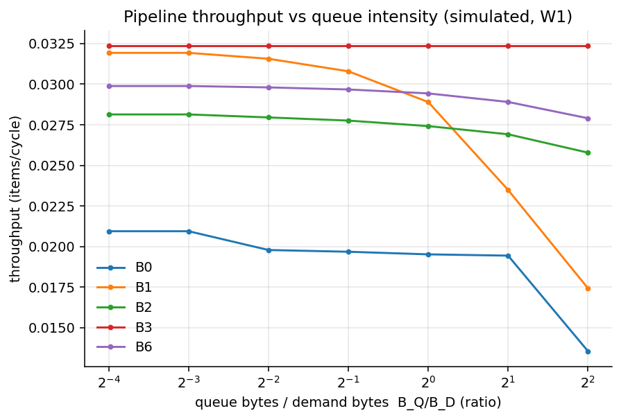
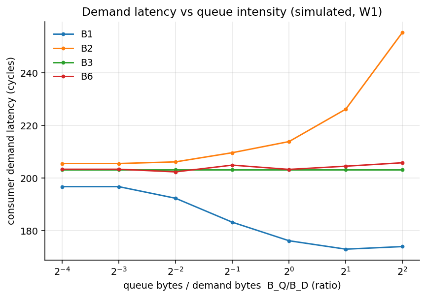
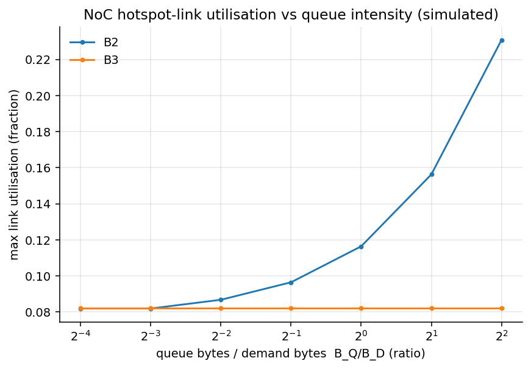
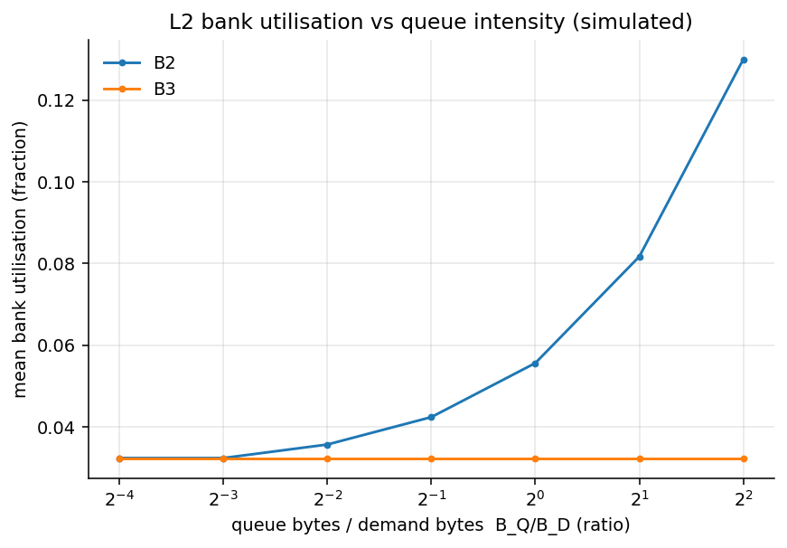
7.2 Where it turns severe
Three regions push the penalty from "tax" to "bottleneck":
| Severe region | Experiment | PC | Mechanism |
|---|---|---|---|
| Hotspot placement — all queues homed on 2 of 8 L2 slices, 4 KiB payload | exp008 (W8) | 271% | the two slices' links/banks saturate; everything queues behind them |
| Footprint overflow — queue storage ≥ L2 capacity | exp004/exp015 (W7) | 50–134% | pinned queue lines evict reusable data (demand miss rate 0.21 → 0.94), then spill to HBM |
| Fine-grained metadata — small items, extra atomics, fast polling | exp007 (W6) | 33% | the per-slice atomic unit approaches saturation (utilisation 0.47) |
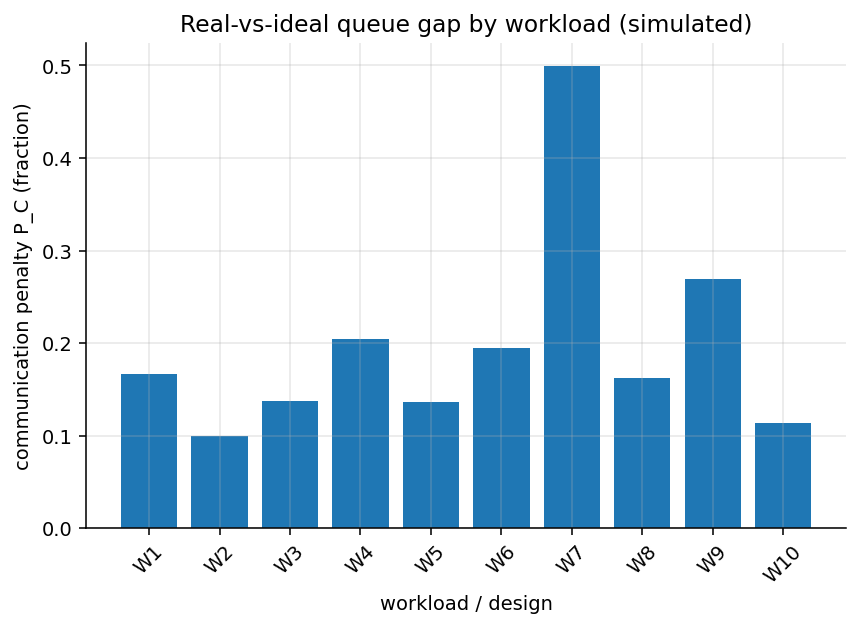
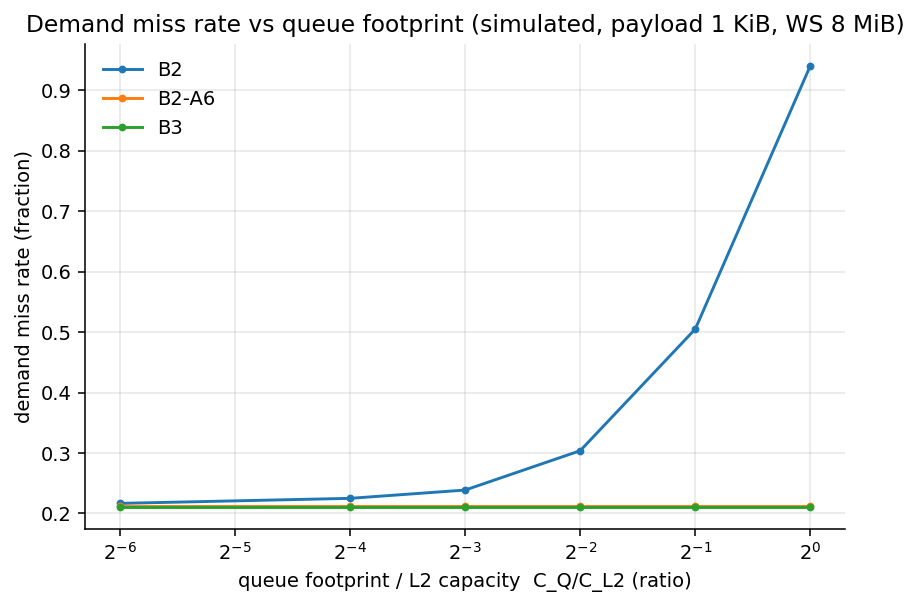
7.3 Imbalance shrinks the problem
When producer and consumer rates differ (exp006), the slower stage dominates total time and hides communication cost: PC peaks at balance (16.5%) and falls to 11–12% at 3× imbalance. Communication fabric only matters for pipelines someone bothered to balance — an important scoping fact.
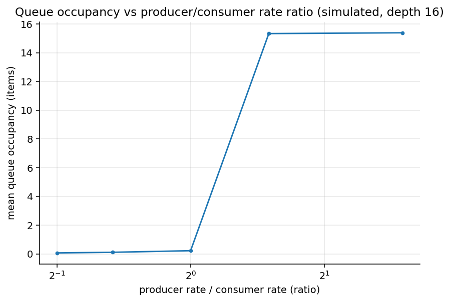
8 · Results 2 — what causes the penalty?
The ablation battery idealizes one resource at a time on top of B2 (queue-heavy W4, 64 CTAs) and measures how much of the B2→B3 gap each idealization recovers. Reading this table is reading the bottleneck:
| Ablation (one resource made ideal) | Gap recovered | Interpretation |
|---|---|---|
| A5 — payload transport free | 48.6% | moving payload bytes is the largest cost |
| A4 — metadata/atomics free | 39.9% | synchronization is second |
| A2 — infinite NoC bandwidth | 26.4% | network contention matters |
| A1 — infinite L2 bank bandwidth | 11.5% | banks are a minor constraint here |
| A3 — infinite L2 capacity | 1.7% | no pollution in this region (small footprint) |
| A6 — queue-line bypass (non-cacheable) | 1.1% | confirms A3; bypass fixes only pollution |
| A8 — demand-priority routing | 2.1% | logical QoS is not the answer |
| A7 — queue-priority routing | −1.9% |
exp009; "gap recovered" = (thrablation − thrB2) / (thrB3 − thrB2). Percentages overlap (removing one bottleneck exposes the next), so they sum >100%.
9 · Results 3 — can planar remedies fix it?
Before any 3D claim, the strong planar alternatives get their shot. In the severe hotspot region (W8, 4 KiB payload — the best possible showcase for any remedy):
| Remedy | Gap recovered | Verdict |
|---|---|---|
| B5 — separate virtual channels | −0.1% | logical isolation fails: the physical slice is the bottleneck |
| B6 — dedicated planar queue SRAM (per slice, hardware engines + events) | 72.3% | removing L2 sharing is most of the fix |
| B7 — B6 + dedicated planar queue network | 75.1% | the strongest planar design |
| B8 — 3D stacked queue tier (per-SM portals) | 83.7% | best, by a consistent margin |
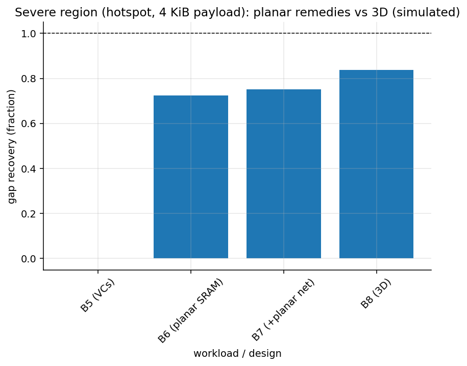
Across the full workload grid (exp010), B7 recovers 40–67% and B8 recovers 55–84%, a persistent B8−B7 margin of ~0.2–0.3 of the gap. The fairness point: B7's dedicated planar network has more aggregate bandwidth than B8's vertical links, and still loses — the 3D edge is path length (a producer's queue op takes zero planar hops), not bandwidth. BookSim independently confirms the network part: with per-SM vertical portals, demand-class latency stays flat (19.4→22.3 cycles) across a 24× increase in queue traffic that drives the planar variants to saturation.
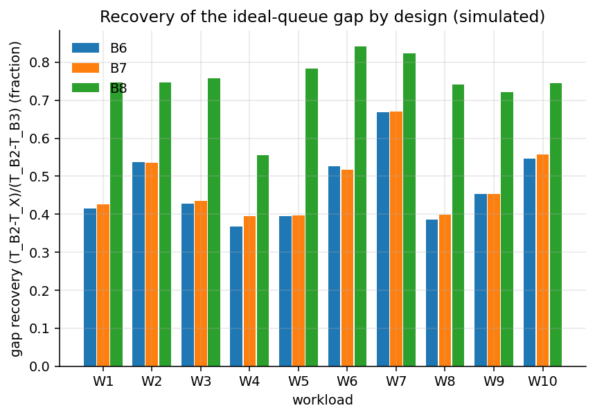
10 · Results 4 — the 3D design space
10.1 Six organizations, one clear winner and one trap
"3D queue fabric" is not one design. Six variants differ in where the portals are (how a CTA physically reaches the stacked die) and what is stacked (payload, metadata, or both). Gap recovery at three payload sizes (exp013, W1):
| Design | Portal / placement | 256 B | 1 KiB | 4 KiB | Verdict |
|---|---|---|---|---|---|
| 3D-D | one vertical link per SM; payload+metadata stacked | 0.78 | 0.69 | 0.42 | best everywhere |
| 3D-E | one link per 2-SM cluster | 0.53 | 0.46 | −0.02 | sharing portals already hurts |
| 3D-A | portals at L2-slice nodes (queue ops cross the mesh first) | 0.41 | 0.33 | −0.07 | ≈ planar B7, pointless |
| 3D-B | payload stacked, metadata stays in L2 | 0.54 | 0.48 | 0.29 | half-measure, half the benefit |
| 3D-C | metadata stacked (hardware events), payload stays in L2 | 0.52 | 0.42 | 0.27 | the cheap option; wins the metadata-heavy region |
| 3D-F | one global portal for the whole chip | 0.32 | 0.05 | −2.43 | worse than doing nothing — the portal saturates |
| B7 (reference) | best planar | 0.42 | 0.42 | 0.38 | the bar to clear |
10.2 How much vertical bandwidth does it need?
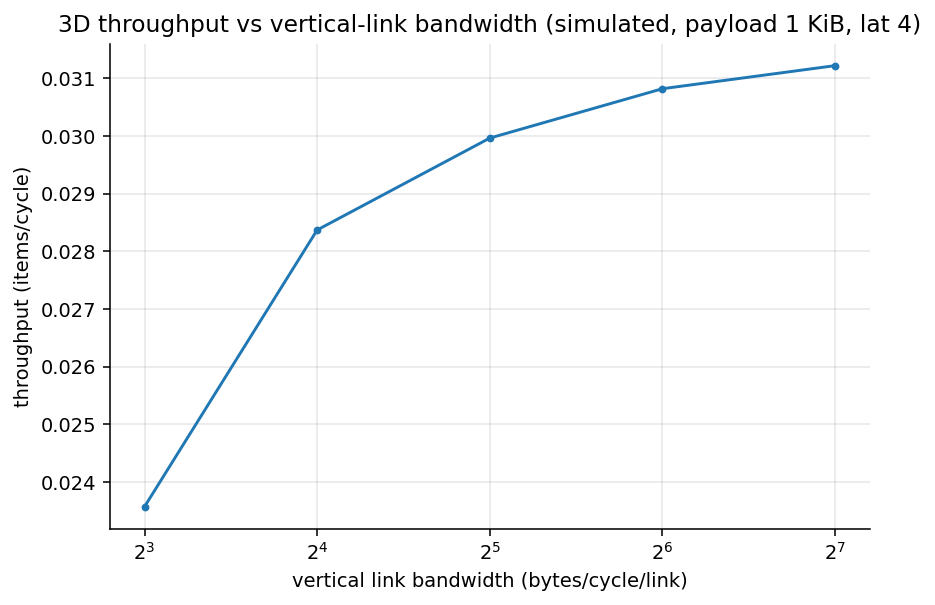
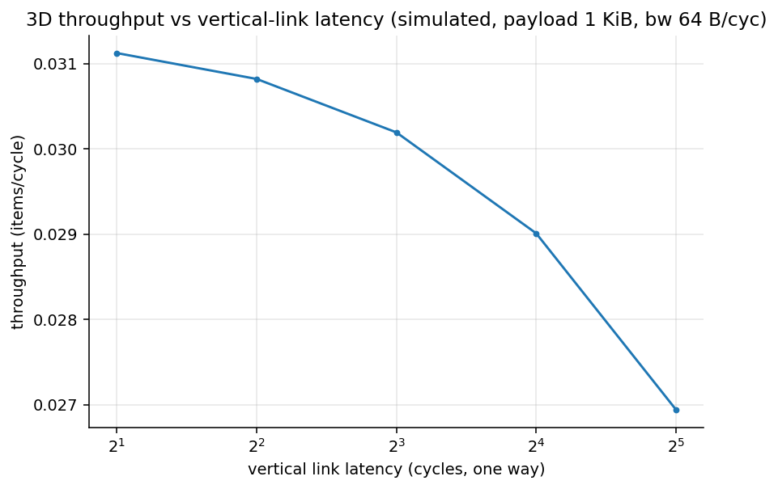
10.3 Energy
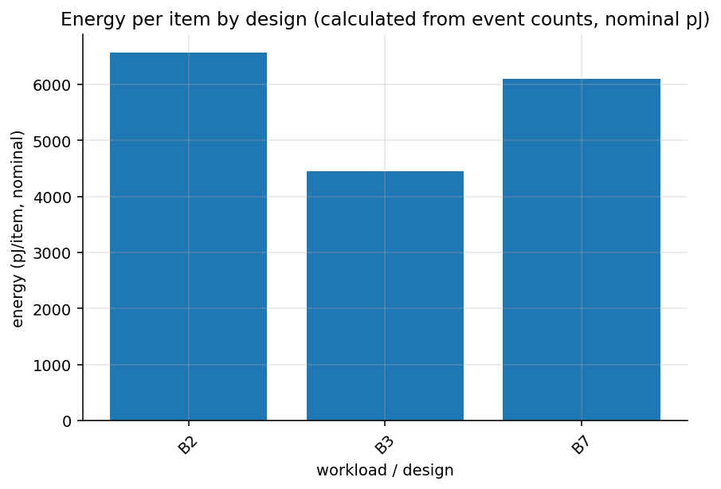
11 · Results 5 — the benefit-region map
The study's single most important artifact: PC and the 3D payoff mapped over
queue intensity (payload size) × queue depth (which sets the L2 footprint,
annotated fp in each cell as a fraction of L2 capacity).
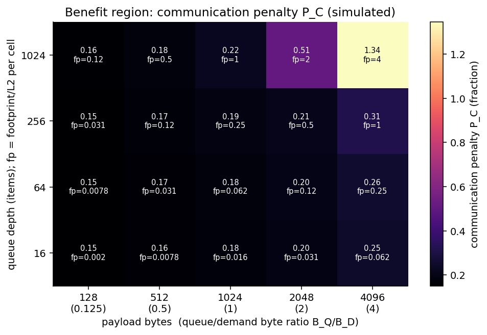
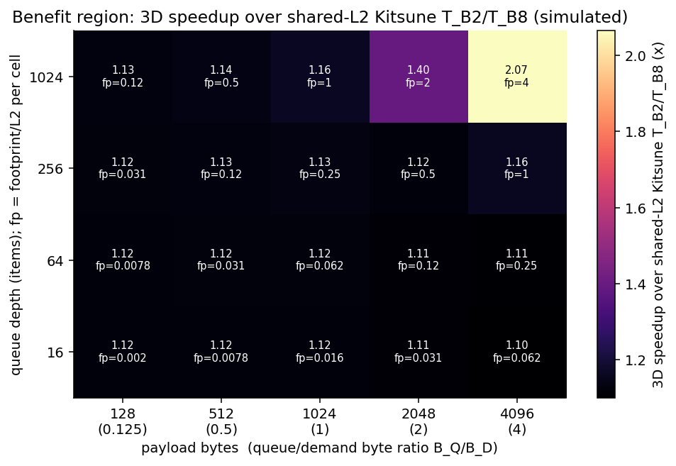
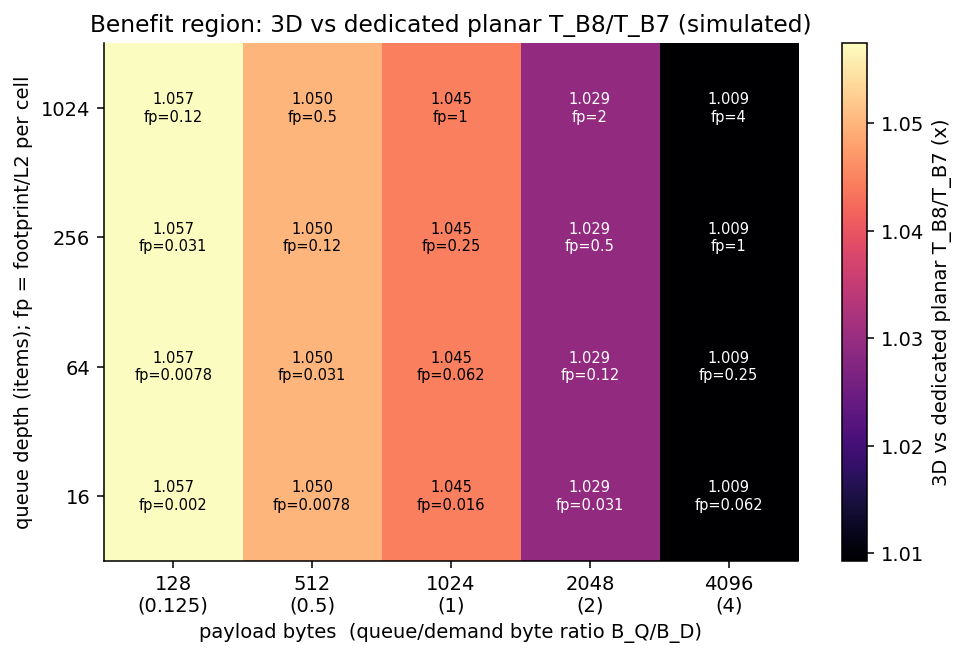
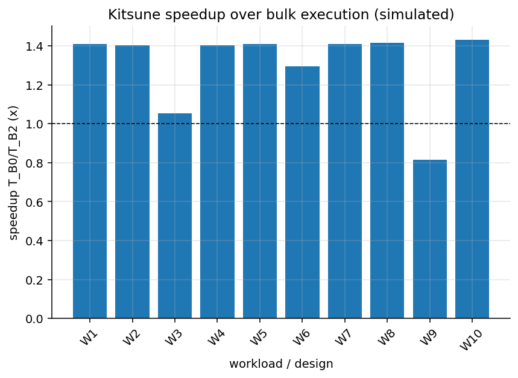
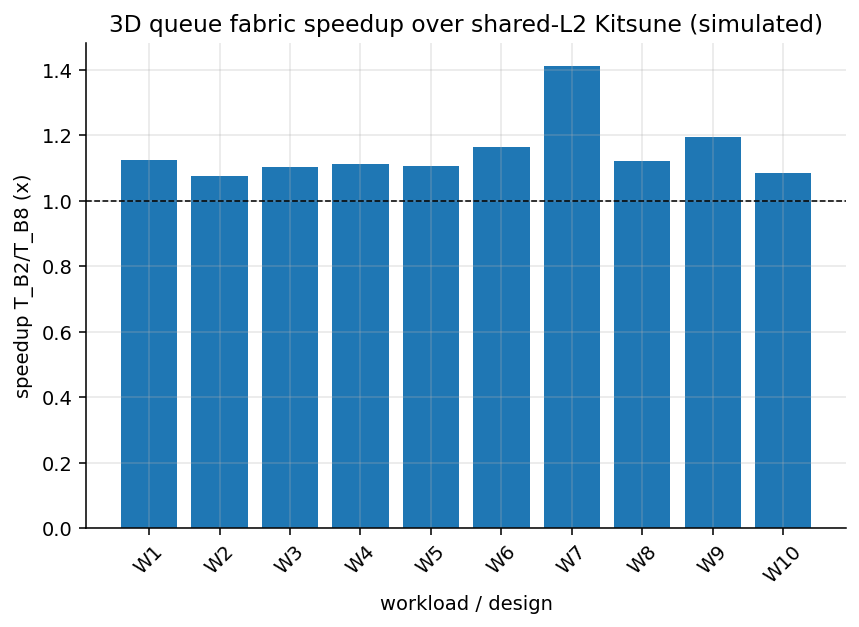
12 · Realism upgrade (v2) — rebuilding on measured GPU behavior
A source-tagged reference compiled from real-silicon measurement papers —
Uncovering Real GPU NoC Characteristics (MICRO 2024), the validated GPU
memory-system model of Khairy et al. (the basis of Accel-Sim), the Hopper/A100
partitioned-L2 microbenchmark study (Luo et al.), and classic dissection papers —
showed that the v1 simulators committed several of the field's known modeling
pitfalls. Key claims were spot-verified against the public papers/repos before
rebuilding. The full gap analysis and parameter provenance live in the research repo's
UPGRADE_PLAN.md; the essentials:
| v1 model | Measured reality (source) | Why it matters |
|---|---|---|
| 4×4 2D mesh, hop-by-hop routing | Hierarchical crossbar SM→TPC→GPC→partition→MP→slice with per-level input speedup; uniform bandwidth, non-uniform latency (JIN24) | meshes create hotspot links real fabrics don't have |
| uniform ~40–60-cycle latency | additive placement latency: 175–248-cycle round trips + ~149-cycle far-partition penalty (JIN24/LUO25/ALP26) | queue ops are 5–8× more expensive than v1 assumed |
| 128-B line-granular requests | 32-B sectors; line fill = 4 sector transactions (KHA18) | request counts and bandwidth shape 4× off |
| naive write-allocate | lazy fetch-on-read write policy (KHA18) | removes phantom DRAM reads on writes |
| no die partitions | A100-style 2 partitions with near/far classes (LUO25) | an entire cost mechanism was missing |
| no acceptance gates | "network wall" asserts + 7 measured-anchor tests (JIN24 Impl.#4) | a model that can't stream >85% DRAM overstates every NoC effect |
12.1 The v2 fabric
Every level is a bandwidth server with a finite queue; request and reply directions are
separate (the data-carrying reply path is sized 2.5× — our own first streaming runs
reproduced the classic "reply network is the bottleneck" failure until it was). Wire
latency uses the additive placement model RT = base + a[SM] + b[GPC,slice] + 149×cross,
calibrated to the measured anchors (mean 212 / min 175 / max 248; far−near ≈ 149).
L2 becomes sectored with per-sector valid/dirty state and lazy fetch-on-read. Seven
validation gates (including a unit test reproducing the published write-then-read
sector experiment, a >85% streaming-DRAM-utilisation regression, and the latency
correlation-structure signature) must pass before any experiment runs.
12.2 What the realistic battery shows (exp101–115, ~420 runs)
| Payload (B) | B2 thr | B3 thr | PC (v2) | PC (v1) |
|---|---|---|---|---|
| 64 | 0.0116 | 0.0159 | 37.0% | 15.1% |
| 512 | 0.0115 | 0.0159 | 38.3% | 16.7% |
| 1024 | 0.0114 | 0.0159 | 39.3% | 18.1% |
| 4096 | 0.0105 | 0.0159 | 51.0% | 25.6% |
exp103 vs exp003 (throughputs in items/cycle). The gap doubled because queue operations now pay measured latencies; it is nearly flat versus concurrency (8–96 CTAs at PC ≈ 38%, exp105) — a latency floor, not congestion.


Cause attribution (exp109, queue-heavy, gap recovered by idealizing one thing)
| Idealized mechanism | v2 recovery | v1 recovery |
|---|---|---|
| Payload transport free (A5) | 47% | 49% |
| Partition penalty removed (A12 — new) | 31% | n/a in v1 |
| Metadata free (A4) | 29% | 40% |
| Infinite fabric bandwidth (A2) | 8% | 26% |
| Infinite L2 bandwidth / capacity / bypass / QoS / ideal hash | ≤1% | ≤12% |
Bandwidth mechanisms collapsed; latency mechanisms dominate. The v1 atomic-unit saturation cliff also vanished (max atomic utilisation 0.22, exp107).
Remedies (exp105/108/113/115)
| Design | v2 gap recovery | v2 vs best planar | Note |
|---|---|---|---|
| B5/A7/A8 — VCs / priority | ≈0–8% | — | unchanged: latency can't be scheduled away |
| B6/B7 — dedicated planar SRAM (+net) | ~42% (0.35–0.53) | 1× (reference) | engines still sit across the full-latency crossbar |
| B8 3D-D/E — per-SM/TPC stacked tier | 92–98% | 1.16–1.18× everywhere | −16% comm. energy; robust to vertical bw 8–128 B/cyc (6% span) and latency 2–32 cyc (4%) |
| 3D-B — payload-only stacked | 92–98% (≤1 KiB) | ≈3D-D | new: payload latency is the active ingredient; posted L2 metadata is cheap |
| 3D-C — metadata-only stacked | 33–44% | ≈B7 | v1's "cheap big win" demoted |
| 3D-F — one global portal | 31–73% | varies | no longer catastrophic (v1: worse than nothing), but degrades at 4 KiB |

assets_r/15_benefit_region_3d_vs_planar.png). The 3D dividend became
broad-based because it is a latency dividend.13 · Cross-simulator validation
A single simulator proving its author's hypothesis is worth little. The plan requires trend agreement (same direction and shape, not identical numbers) across independently-built platforms, plus explanations for every disagreement.
12.1 What all platforms agree on
| Claim | Analytical | Custom DES | SST | BookSim |
|---|---|---|---|---|
| PC grows monotonically with payload | 8% → steep past ratio≈1–2 | 15% → 26% | 30% → 69% | n/a (no pipeline) |
| Demand latency ~flat below saturation (no victim effect) | predicted | ≈flat | 363→369 cyc | 24→32 cyc |
| Hotspot concentration is the severe planar failure | predicted (hotspot factor) | PC 271% | — | collapse: 827 cyc, unstable |
| Logical QoS does not isolate | — | A7/A8/B5 ≈ 0 | — | priority helps mildly, never isolates |
| Physical vertical isolation is complete; portal count is the new constraint | endpoint term | 3D-F −2.43; needs ≥32 B/cyc/link | — | 1 portal saturates @ rq≈0.012; 8 stable |
| NoC hotspot link binds first, L2 banks second | predicted | measured ordering | consistent | consistent |
12.2 SST validation numbers (exp011)
| Payload lines (×128 B) | B2 throughput (items/cyc) | B3 throughput | PC | B2 demand latency (cyc) | B2 enqueue latency (cyc) |
|---|---|---|---|---|---|
| 1 | 0.00795 | 0.01036 | 30.3% | 363 | 226 |
| 4 | 0.00786 | 0.01036 | 31.8% | 364 | 238 |
| 8 | 0.00781 | 0.01036 | 32.8% | 365 | 247 |
| 16 | 0.00717 | 0.01036 | 44.5% | 366 | 337 |
| 32 | 0.00613 | 0.01036 | 69.1% | 369 | 528 |
12.3 BookSim demand-class latency (exp012, cycles; "sat" = network saturated)
| Queue inj. rate | planar | planar hot-2 | demand-priority | 8 VCs | 3D per-SM | 3D 2-portal | 3D global |
|---|---|---|---|---|---|---|---|
| 0.002 | 24.0 | 24.0 | 24.0 | 24.0 | 19.4 | 19.4 | 19.4 |
| 0.012 | 25.0 | 25.4 | 24.6 | 25.0 | 20.1 | 20.2 | 151.8 |
| 0.024 | 26.3 | 160.7 | 25.5 | 26.3 | 20.4 | 143.2 | sat |
| 0.048 | 32.0 | 827 (sat) | 28.9 | 31.8 | 22.3 | sat | sat |
Open-loop, network-only latencies; compare slopes within a column, not absolutes across topologies (route-table tie-breaking differs slightly between the two anynet files).
13.3½ v2 cross-checks (realistic battery)
After the rebuild, the cross-checks were rerun. SST (independent codebase, now on a merlin crossbar) brackets the custom simulator's PC payload trend: 24% → 67% vs 37% → 51% — below at small payloads (its coherent L1s keep hot queue lines close), above at large ones (coherence ping-pong). BookSim, rebuilt as a hierarchical-crossbar tree with deliberately tight 1-flit/cycle channels, still shows concentration collapse — which, next to the custom simulator's provisioned fabric absorbing the same traffic, quantifies the v1 artifact itself: legacy-style network models collapse where measured-provisioning models shrug. Per-TPC vertical portals keep BookSim's demand class flat (15.0 → 15.7 cycles) across a 16× queue-rate sweep; a global portal saturates early, confirming portal-count sensitivity at network level.
13.4 Disagreements, explained (not hidden)
| Disagreement | Explanation |
|---|---|
| SST's PC ≈ 2× the custom sim's at matched configs | SST's L1s are MESI-coherent, so each queue line physically migrates producer-L1 → L2 → consumer-L1 with invalidations, and metadata is a shared-line read+write pair — a costlier queue mechanism than the custom sim's L2-atomic model. Real Kitsune (L2 atomics) sits between; the two simulators bracket it. |
| Analytical saturation onset later than DES | The M/D/1 model has no finite buffers, MSHR limits, or store-and-forward serialization; it is optimistic near saturation by construction. Resource ordering matches. |
| BookSim absolute latencies tiny vs the others | Network-only cycles; no cache or memory in the loop. Used for slopes only. |
14 · Negative results — kept on purpose
The project charter treats negative results as first-class outcomes. These four each veto a tempting claim.
Superseded by the v2 realism upgrade (kept and labeled — the model was wrong, not the data)
15 · Final verdict and region table (v2)
The plan defines five possible endings: A strong support, B conditional support, C planar is sufficient, D wrong bottleneck, E problem too small. On the realistic model the evidence lands on Conclusion B — conditional support, strengthened: versus v1, the favorable region widened from "hotspot/overflow corners" to essentially all communication-bound pipelines on a partitioned die; the planar-remedy ceiling dropped (≈42% vs 75%); the 3D margin grew (a uniform 1.16–1.18× over the strongest planar design, with −16% communication energy); and a new first-order mechanism — die-partition crossing — strengthens the physical-isolation argument. Conclusion A (unconditional) is still withheld for three reasons: the unmodeled DSM-class SM-side planar competitor (§12), missing hardware calibration, and untested thermal/area feasibility of stacking.
v2 region table (realistic battery; Kitsune-vs-bulk on execution-time basis)
| Workload region | Kitsune vs bulk | PC | Main bottleneck | Best planar fix (recovery) | 3D (recovery / vs B7) | 3D justified? |
|---|---|---|---|---|---|---|
| Balanced pipeline (W1) | 7.1× | 38% | queue-path latency | B7 (0.42) | 0.96 / 1.18× | Yes |
| Queue-heavy (W4) | 9.3× | 73% | payload latency + partition crossing | B7 (0.36) | 0.81 / 1.17× | Yes — strongest |
| Demand-heavy (W5) | 5.0× | 23% | demand latency dominates | B7 (0.47) | 0.99 / 1.16× | Marginal (small gap) |
| Metadata-heavy (W6) | 7.2× | 37% | round-trip latency (not atomics) | B7 (0.43) | 0.99 / 1.17× | Yes |
| Pollution / overflow (W7) | 7.2× | 62% | pinned-line pollution + spill | bypass (pollution only); B7 0.53 | 0.94 / 1.17× | Yes (stacked capacity unique) |
| Hotspot / camping (W8) | 7.0× | 41% | not a hotspot problem anymore | B7 (0.41) | 0.96 / 1.17× | Yes (same as baseline) |
| Cross-partition placement (W11 — new) | 6.6× | 49% | partition-crossing penalty | affinity-aware placement first; B7 (0.41) | 0.95 / 1.17× | Yes — new mechanism |
| Consumer-starved (W3) | 7.7× | 17% | producer rate | any engine (B6/B7 ≈ 0.98) | 1.0 / ≈1.0× | No — planar suffices |
| Multi-stage (W9) | 1.18× | 39% | chained latency + stage split | B7 (0.42) | 0.95 / 1.16× | Qualified yes (thin margin over bulk) |
Kitsune-vs-bulk magnitudes are synthetic-pipeline numbers on a realistic memory system (bulk pays two serialized memory phases); published Kitsune reports 1.3–2.4× on real applications. The v1 (mesh-model) region table is preserved below for comparison.
v1 region table (mesh model — superseded where §12/§14 say so)
| Workload region | Kitsune vs bulk | PC | Main bottleneck | Best planar fix (recovery) | 3D gain | 3D justified? |
|---|---|---|---|---|---|---|
| Queue-light | 1.34–1.41× | 10–15% | enqueue latency + metadata | B7 (~0.42) | 0.74 rec / +1–6% | No |
| Queue-heavy (payload-dominated) | 1.40× | 20–26% | payload transport > metadata > NoC | B7 (~0.40) | 0.55–0.69 rec | Marginal |
| Metadata-heavy (fine-grained) | 1.30× | 19–33% | atomic-unit serialization | metadata engine (~0.84) | 3D-C alone ~0.42 | No — a metadata engine (planar or stacked) suffices |
| Pollution / overflow (footprint ≥ 0.5×L2) | 1.41× | 50–134% | pinned-line pollution + HBM spill | bypass kills pollution; B7 ~0.67; capacity unfixable planar | 0.82 rec + stacked capacity | Yes — conditional |
| NoC-hotspot (concentrated homes, big payload) | 1.42× | 155–271% | slice/link concentration; VCs useless | B6/B7 0.72–0.75 | 0.84 rec / +9% | Yes — conditional (but re-hash queue homes first) |
| Multi-stage, naively partitioned | 0.82× | 27% | stage imbalance dominates | fix the partitioning | irrelevant | No |
Design guidance, if pursued (v2)
Build 3D-D or 3D-E: one vertical link per SM or per TPC, stacked payload banks first (payload-only 3D-B captures nearly the full benefit at ≤1 KiB payloads), hardware enqueue/dequeue with credit/ready events, posted-enqueue support in software. Requirements are milder than v1 suggested: even 8 B/cycle vertical links lose only ~6%, and 32-cycle vertical latency ~4%. Slice-portal designs (3D-A) remain pointless (≈B7). A global tier (3D-F) is viable at small payloads but degrades sharply at 4 KiB. Keep the non-cacheable bypass policy for the pollution axis regardless. For pipelines whose stages can be co-scheduled on one die partition, do placement affinity first — it removes the 31% partition term for free.
Recommended next steps (v2, in value order)
- Model a DSM-class SM-side planar queue baseline — the one competitor that could still close the 1.16–1.18× gap (Hopper SM-to-SM measures 181–213 cycles vs ≈300–460 for slice-side engines and ≈10–35 vertical).
- Hardware microbenchmarks on a real GPU (queue round trip, victim curves, footprint sweeps) to calibrate the latency floor that now carries the whole conclusion.
- An Accel-Sim case study of W4/W7/W11-like pipelines with real warps/occupancy.
- Thermal and area feasibility of SRAM stacked over a hot GPU die.
- Full-scale (108-SM) sweep to check scaled-model distortions.
16 · Limitations & reproducibility
Limitations (the reasons every number is a trend, not a prediction)
- No hardware calibration. No GPU on the experiment machine; NVIDIA's NoC topology, L2 bank mapping, and arbitration are proprietary. All parameters are assumed, scaled values with sensitivity sweeps.
- No end-to-end GPU execution model. Warp scheduling, occupancy, and register pressure are outside scope (gem5 and Accel-Sim were deliberately skipped, with the justification recorded in the project's decision log).
- Scaled system (~1/8 of a large GPU): 8 SMs, 8 MiB L2, 4×4 mesh.
- Bracketed queue mechanism: custom sim models L2-atomic queues, SST models coherent-L1 queues; real Kitsune sits between.
- Simplified NoC in the custom sim (store-and-forward per hop, retry backpressure) — slightly flatters short paths; bounded by making all designs move line-granular payloads, and BookSim agrees directionally.
- Energy = event counts × nominal pJ; no layout, no thermal model.
- Open-loop BookSim by construction; its stacked-source artifact biases against 3D (conservative).
- v2-specific: the DSM-class SM-side planar competitor is unmodeled (bounds the 3D margin, §12); the posted-enqueue window (2) is a software-pipelining assumption; SST could not adopt 32-B sectored lines (memHierarchy crash — documented) and stays a 128-B-line bracket; v2 anchors are source-derived but still uncalibrated on hardware.
Reproducibility
Every experiment directory stores its config.yaml, random seed, git commit
hash, raw outputs, parsed CSVs, and regenerable plots. The custom simulator ships a
23-test validation suite: 16 invariants (conservation, Little's law, determinism,
backpressure direction, ablation direction) plus 7 v2 measured-anchor gates (sector
write/read semantics, latency-structure correlation, streaming DRAM utilisation >85%,
slice-saturation provisioning). Both batteries are archived: v1 = exp001–015
(mesh model), v2 = exp101–115 (realistic model). Tooling: Python 3.10.12,
SST 15.0.0 built from source, BookSim2 master + a two-pattern local patch, g++ 11.4. The research repository
(separate from this website) contains the full simulator source, all 15 experiment
records, per-simulator DESIGN/VALIDATION/RESULTS documents, and the phase reports
PHASE_00–PHASE_07.
Source papers & docs referenced by the study: Kitsune (arXiv:2502.18403), WASP (HPCA 2024), 3DLS (IEEE CAL 2026), StreamDQ (arXiv:2607.08993), TokenStack (arXiv:2605.05639), NVIDIA Hopper/CUDA documentation, MICRO 2024 GPU-NoC microbenchmarking. Reported numbers from those papers are cited in the research repo's literature review and were never copied into this study's projections.